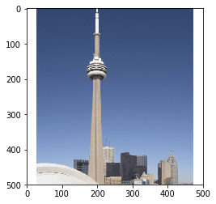

Rocket or Tower
Recently I started working on fast.ai; this is my attempt at creating a network.
Attempt One
My training set contains 10 rockets and 10 towers.
Using the three-line program from the fast.ai library for the precompiled model resnet
0 is more rocket-like, 1 is more building-like.
With only 10 examples of each, it is amazing how well it did, only misclassifying the CN tower just barely as a rocket.

Attempt Two
I added a lot more photos to about 300 each for training and 15 for the validation.
This time I added data augmentation, variable learning rates and unfreezing the model.
Data Augmentation
Modify the image slightly to known effects of a camera. These are transformations that shift, zoom and flip the images. These are fed into the learning like any other image.

Stochastic Gradient Descent with Restarts
When a network is learning a function, it needs to start off high and reduce to gain more accuracy. This is included but also is restarted every epoch. This helps generalize the network by trying to avoid narrow minimums, creating a learning rate like this...

This is improved a little bit more by slowing down the learning rate on the later epochs.
Training the precomputed Model
Before, training was done on the last few layers. This opens the beginning layers. Also much lower learning rates are used in decreasing order to the earlier layers.
Result
96.6% accuracy, with one error in classification.
The confusion matrix output helped find what values were misclassified.

Below are the images it was most uncertain of, including the incorrect labeling of the rocket on the bottom left.